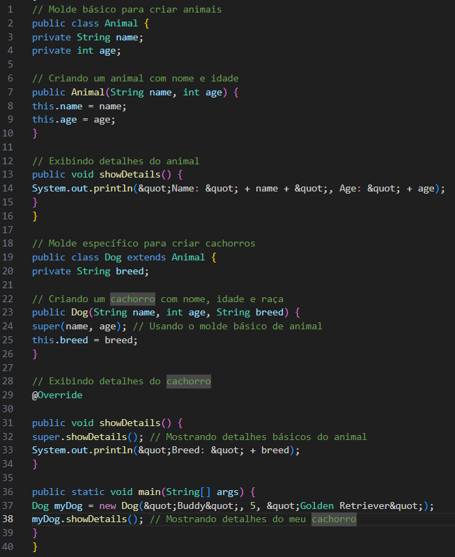
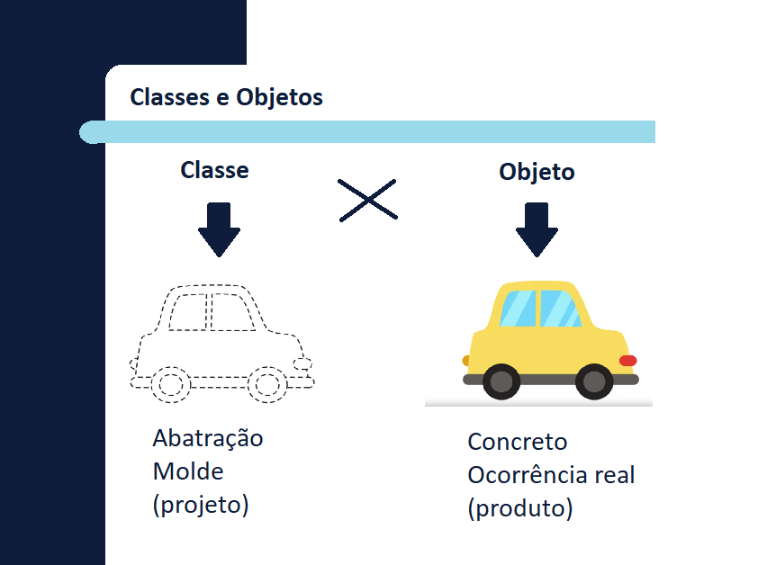
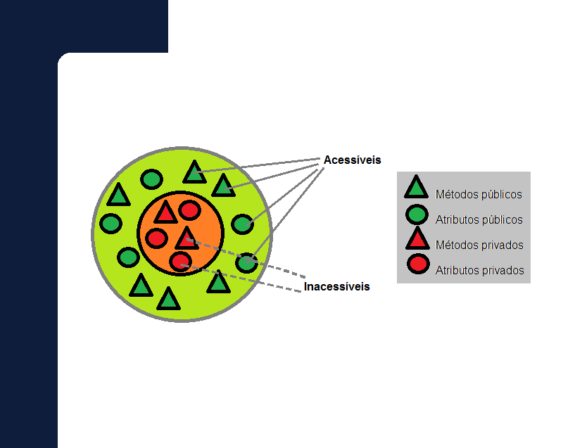
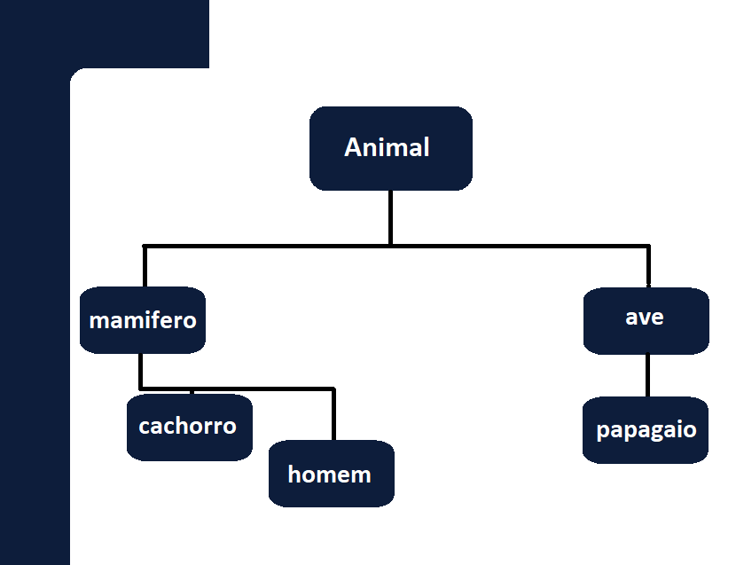
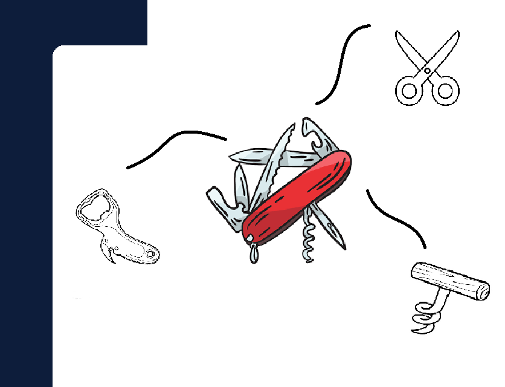

Definição do Conceito:
A POO é uma maneira de programar computadores organizando o código em “objetos”. Esses objetos são como “coisas” no mundo real (por exemplo, um carro, uma pessoa, um cachorro). Cada objeto tem características (como cor, tamanho) e comportamentos como (andar, falar).
Basicamente a POO é uma maneira de organização baseada em objetos, cada um deles tem suas características e comportamentos.
Importância e Benefícios:
A POO ajuda na organização do código de uma forma mais natural e logica, o código pode ser reutilizado em diferentes partes do programa, é mais fácil corrigir ou melhorar o código e protege os dados importantes dentro dos objetos.
Exemplos Práticos em Java:
Imagine que estamos criando brinquedos de animais:
Classe Animal (Molde Básico):
Características: nome, idade.
Comportamentos: emitir som, mover-se.
Classe Cachorro (Molde Específico):
Características: nome, idade, raça.
Comportamentos: emitir som, mover-se, latir.
Exemplo em Código (Simples)

Analogias para Facilitar a Compreensão:
1. Classes e Objetos (Carros): A classe é como uma planta de um carro e o objeto é como um carro real. A planta (classe) diz como o carro deve ser, mas você precisa de um carro real (objeto) para dirigir.

2. Encapsulamento (Controle remoto): Um controle remoto tem botões que você usa sem precisar saber como funciona por dentro. O encapsulamento faz algo parecido, restringindo o aceso aos atributos aos métodos (ação) de um objeto.

3. Herança (Características Familiares): Assim como uma criança herda características dos pais, uma classe pode herdar características de outra classe. Por exemplo, um carro esportivo herdar coisas de um carro comum, mas com extras.

4. Polimorfismo (Ferramentas Multifuncionais): Um canivete suíço pode ser usado como faca, tesoura, abridor de garrafas e etc. Isso é polimorfismo, um objeto que pode fazer várias coisas diferentes (um objeto com vários métodos).

Questões Comuns e Respostas:
1. O que é POO e por que é importante?
POO é uma maneira de organizar seu código usando objetos que representem coisas reais. É importante porque torna o código mais organizado e fácil de modificar.
2. Qual é a diferença entre classe e objeto?
Uma classe é como uma planta e o objeto é o produto final. É como a planta de um carro(prototipo) e o carro(produto final).
3. O que é herança e como ela é usada?
Herança é uma classe recebendo características de outra classe. É como uma criança herdando os olhos claros dos pais.
4. O que é polimorfismo?
Polimorfismo é a capacidade de um objeto ou método funcionar de várias maneiras diferentes.
5. Como o encapsulamento melhora a segurança do código?
Encapsulamento esconde os detalhes internos, permitindo acesso apenas através de métodos seguros. Isso protege os dados de alterações indesejadas.
Precisa ir mais afundo neste tema?
Assista as video aulas abaixo do canal curso e video!
Curso em Vídeo - Programação Orientada a Objetos (POO) em Java
Curso de Java #01 - História do Java - Gustavo Guanabara